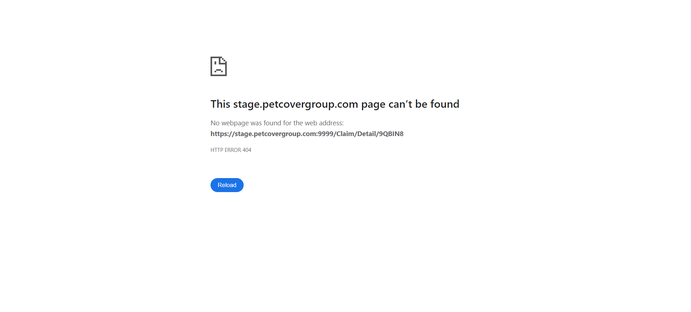

-
Verify account page hyperlinks
0h 0m 19s+746ms
15:29:44 pmVerify account page hyperlinks
05.08.2023 15:29:44 05.08.2023 15:30:03 0h 0m 19s+746msAll hyperlinks with icons on account page should workGiven User should log in with username "sa" and password "Good2go@2019" to the admin panelAnd User selects language optionWhen User clicks on account icon on left tool barWhen User clicks on iconThen User will redirect to respected pagehook.hooks.displayUrl(io.cucumber.java.Scenario)http://52.32.106.250:9999/Bank Information page displays with details after clicking on bank code link on manage bank detailsGiven User should log in with username "sa" and password "Good2go@2019" to the admin panelAnd User selects language optionWhen User clicks on account icon on left tool barWhen User clicks on bank iconAnd User clicks on bank code link on manage bank pageThen Bank information page displays with detailshook.hooks.displayUrl(io.cucumber.java.Scenario)http://52.32.106.250:9999/ -
Check Admin Page Data And Functionality
0h 0m 45s+944ms
15:30:10 pmCheck Admin Page Data And Functionality
05.08.2023 15:30:10 05.08.2023 15:30:56 0h 0m 45s+944msCheck Letter information on manage letter pageGiven User should log in with username "sa" and password "Good2go@2019" to the admin panelAnd User selects language optionWhen User clicks on administration icon on left tool barAnd User clicks on letter template icon on administration pageThen User will able to see list of existing lettershook.hooks.displayUrl(io.cucumber.java.Scenario)http://52.32.106.250:9999/Verify that the Administration page displays with a set of icons.Corresponding page opens on clicking icon.Given User should log in with username "sa" and password "Good2go@2019" to the admin panelAnd User selects language optionWhen User clicks on administration icon on left tool barThen Account page displays with icons and corresponding page displays by clicking on icon.hook.hooks.displayUrl(io.cucumber.java.Scenario)http://52.32.106.250:9999/View Agent page displays with all details by clicking on agent reference number on Manage agent pageGiven User should log in with username "sa" and password "Good2go@2019" to the admin panelAnd User selects language optionWhen User clicks on administration icon on left tool barWhen User clicks on agent iconAnd User clicks on agent reference number under list of agent detailsThen View agent page displays with all informationhook.hooks.displayUrl(io.cucumber.java.Scenario)http://52.32.106.250:9999/Manage Company page displays with list of companies by clicking on company icon on administration pageGiven User should log in with username "sa" and password "Good2go@2019" to the admin panelAnd User selects language optionWhen User clicks on administration icon on left tool barWhen User clicks on company iconThen Manage company page displays with list of available companieshook.hooks.displayUrl(io.cucumber.java.Scenario)http://52.32.106.250:9999/ -
Verify Available Data And Functionality On Approve Page
0h 0m 9s+526ms
15:31:01 pmVerify Available Data And Functionality On Approve Page
05.08.2023 15:31:01 05.08.2023 15:31:11 0h 0m 9s+526msUser redirects to approve claim page after clicking on approve claim icon on dashboard pageGiven User should log in with username "sa" and password "Good2go@2019" to the admin panelAnd User selects language optionWhen User clicks on approve claims icon on left tool barThen User will redirect to page with "Approve Claims" message on itAnd User will able to see data on approve claims pagehook.hooks.displayUrl(io.cucumber.java.Scenario)http://52.32.106.250:9999/hook.hooks.takeScreenShotOnFailure(io.cucumber.java.Scenario)
-
Verify Data Of Manage Client Page
0h 0m 7s+122ms
15:31:15 pmVerify Data Of Manage Client Page
05.08.2023 15:31:15 05.08.2023 15:31:22 0h 0m 7s+122msUser will redirect to manage client page after clicking on client icon on left tool barGiven User should log in with username "sa" and password "Good2go@2019" to the admin panelAnd User selects language optionWhen User clicks on client icon on left tool barThen User will see client detailshook.hooks.displayUrl(io.cucumber.java.Scenario)http://52.32.106.250:9999/ -
Verify DashBoard Items
0h 0m 5s+944ms
15:31:27 pmVerify DashBoard Items
05.08.2023 15:31:27 05.08.2023 15:31:33 0h 0m 5s+944msVerify all details of dashboardVerify all details of dashboardGiven User should log in with username "sa" and password "Good2go@2019" to the admin panelAnd User selects language optionThen User is able to see tag "Client" and number of total client "874" and monthly client "0"Then User is able to see tag "Quote" and number of total quote "1449" and monthly quote "20"Then User is able to see tag "Policy" and number of total policy "203" and monthly policy "9"Then User is able to see tag "Claim" and number of total claim "9" and monthly claim "0"hook.hooks.displayUrl(io.cucumber.java.Scenario)http://52.32.106.250:9999/ -
Verify Log out functionality
0h 0m 17s+848ms
15:31:37 pmVerify Log out functionality
05.08.2023 15:31:37 05.08.2023 15:31:55 0h 0m 17s+848msVerify log out feature of systemGiven User should log in with username "sa" and password "Good2go@2019" to the admin panelAnd User selects language optionWhen User clicks on Logoff buttonThen User will redirect to login pagehook.hooks.displayUrl(io.cucumber.java.Scenario)http://52.32.106.250:9999/ -
Login To Admin Panel
0h 0m 10s+338ms
15:31:59 pmLogin To Admin Panel
05.08.2023 15:31:59 05.08.2023 15:32:10 0h 0m 10s+338msVerify Login eventGiven User is one the website login pageAnd User enters username "sa" and password "Good2go@2019" and click signIn buttonAnd User selects language optionThen User will be able to see dashBoardhook.hooks.displayUrl(io.cucumber.java.Scenario)http://52.32.106.250:9999/ -
Verify Available Data And Functionality On ManageClaims Page
0h 1m 7s+167ms
15:32:15 pmVerify Available Data And Functionality On ManageClaims Page
05.08.2023 15:32:15 05.08.2023 15:33:22 0h 1m 7s+167msUser will redirect to manage claims page after clicking on manage claim icon on left tool barGiven User should log in with username "sa" and password "Good2go@2019" to the admin panelAnd User selects language optionWhen User clicks on manage claims icon on left tool barThen User will able see all data available on manage claim pagehook.hooks.displayUrl(io.cucumber.java.Scenario)http://52.32.106.250:9999/All data concern date displays with dd-mm-yyyy format and data of amount prefixed by £ sign on manage claim pageGiven User should log in with username "sa" and password "Good2go@2019" to the admin panelAnd User selects language optionWhen User clicks on manage claims icon on left tool barThen All data under treatment and cliam first advised date column displays in dd-mm-yyyy formatThen All data under Amount paybale column prefixed by £ signhook.hooks.displayUrl(io.cucumber.java.Scenario)http://52.32.106.250:9999/User will redirect to respected claim information page by clicking on claim number link on manage claim pageGiven User should log in with username "sa" and password "Good2go@2019" to the admin panelAnd User selects language optionWhen User clicks on manage claims icon on left tool barWhen User clicks on claim number on manage claim pageThen User will redirects to respected claim information pagehook.hooks.displayUrl(io.cucumber.java.Scenario)http://52.32.106.250:9999/Add claim page displays all dropdowns with valid items and date appears with calender iconGiven User should log in with username "sa" and password "Good2go@2019" to the admin panelAnd User selects language optionWhen User clicks on manage claims icon on left tool barWhen User clicks on add claim buttonThen User will redirect to add claim pageAnd Page has all dropdown with valid list items'hook.hooks.displayUrl(io.cucumber.java.Scenario)http://52.32.106.250:9999/ -
Check Manage Policy Page Data And Functionality
0h 1m 17s+924ms
15:33:26 pmCheck Manage Policy Page Data And Functionality
05.08.2023 15:33:26 05.08.2023 15:34:44 0h 1m 17s+924msCheck of manage policy pageGiven User should log in with username "sa" and password "Good2go@2019" to the admin panelAnd User selects language optionWhen User clicks on policy icon on left tool barThen User can see "Manage Policy" message with all policy datahook.hooks.displayUrl(io.cucumber.java.Scenario)http://52.32.106.250:9999/Verify Date format of start date and and date column dataGiven User should log in with username "sa" and password "Good2go@2019" to the admin panelAnd User selects language optionWhen User clicks on policy icon on left tool barThen All data under Start date and And date displays in dd-mm-yyyy formathook.hooks.displayUrl(io.cucumber.java.Scenario)http://52.32.106.250:9999/User will able to see policy information page after clicking on policy link on manage policy pageGiven User should log in with username "sa" and password "Good2go@2019" to the admin panelAnd User selects language optionWhen User clicks on policy icon on left tool barWhen User clicks on policy numberThen User will redirect to policy information pagehook.hooks.displayUrl(io.cucumber.java.Scenario)http://52.32.106.250:9999/Verify that the user can download the client's policy letterGiven User should log in with username "sa" and password "Good2go@2019" to the admin panelAnd User selects language optionWhen User clicks on policy icon on left tool barWhen User clicks on policy number linkAnd User clicks on letter tab on policy information pageAnd User clicks on download iconThen User will able to see downloaded policy pagehook.hooks.displayUrl(io.cucumber.java.Scenario)http://52.32.106.250:9999/Check appropriate policy data should displays against option selected from status drop down on manage policy pageGiven User should log in with username "sa" and password "Good2go@2019" to the admin panelAnd User selects language optionWhen User clicks on policy icon on left tool barWhen User selects any options from status dropdownThen Appropriate data displays on manage policy page depend on drop down optionhook.hooks.displayUrl(io.cucumber.java.Scenario)http://52.32.106.250:9999/ -
Verify Data And Functionality Of Manage Quote Page
0h 1m 49s+641ms
15:34:49 pmVerify Data And Functionality Of Manage Quote Page
05.08.2023 15:34:49 05.08.2023 15:36:38 0h 1m 49s+641msUser will redirect to manage quote page after clicking on quote icon on left tool barGiven User should log in with username "sa" and password "Good2go@2019" to the admin panelAnd User selects language optionWhen User clicks on quote icon on left tool barThen User will see quote detailshook.hooks.displayUrl(io.cucumber.java.Scenario)http://52.32.106.250:9999/To Check Quote date and Expire date at quote table displays in dd-mm-yyyy formatGiven User should log in with username "sa" and password "Good2go@2019" to the admin panelAnd User selects language optionWhen User clicks on quote icon on left tool barThen User will able to see all data under quote date and expire date column displays with dd-mm-yyyy formathook.hooks.displayUrl(io.cucumber.java.Scenario)http://52.32.106.250:9999/One can redirect to add quote page by clicking add quote button on top right corner of manage quoteGiven User should log in with username "sa" and password "Good2go@2019" to the admin panelAnd User selects language optionWhen User clicks on quote icon on left tool barWhen User clicks add quote button on manage quote pageThen User will able to see add quote page with datahook.hooks.displayUrl(io.cucumber.java.Scenario)http://52.32.106.250:9999/Verify data under total and monthly premium column preceding by £ signGiven User should log in with username "sa" and password "Good2go@2019" to the admin panelAnd User selects language optionWhen User clicks on quote icon on left tool barThen User will able to see all data under total and monthly premium colum prefixed by £ signhook.hooks.displayUrl(io.cucumber.java.Scenario)http://52.32.106.250:9999/To check whether user will able able to redirect and see data on microchip file upload page after clicking on upload microchip button on manage quote pageGiven User should log in with username "sa" and password "Good2go@2019" to the admin panelAnd User selects language optionWhen User clicks on quote icon on left tool barWhen User clicks on upload microchip file buttonThen User will be able to see microchip file upload page with dataStep skippedhook.hooks.displayUrl(io.cucumber.java.Scenario)http://52.32.106.250:9999/hook.hooks.takeScreenShotOnFailure(io.cucumber.java.Scenario)On the Add Quote page, verify that the Product dropdown lists Dog, Cat, Exotic, and Introductory CoverGiven User should log in with username "sa" and password "Good2go@2019" to the admin panelAnd User selects language optionWhen User clicks on quote icon on left tool barWhen User clicks on add quote buttonThen On add quote page product dropdown will appear with desired listhook.hooks.displayUrl(io.cucumber.java.Scenario)http://52.32.106.250:9999/Respected quote information page will be displayed upon clicking quote number on manage quote pageGiven User should log in with username "sa" and password "Good2go@2019" to the admin panelAnd User selects language optionWhen User clicks on quote icon on left tool barWhen User clicks on quote number on manage quote pageThen User will see quote informationhook.hooks.displayUrl(io.cucumber.java.Scenario)http://52.32.106.250:9999/ -
Verify Report page hyperlinks
0h 0m 18s+402ms
15:36:42 pmVerify Report page hyperlinks
05.08.2023 15:36:42 05.08.2023 15:37:01 0h 0m 18s+402msAll hyperlinks with icons on setting page should workGiven User should log in with username "sa" and password "Good2go@2019" to the admin panelAnd User selects language optionWhen User clicks on reports icon on left tool barThen User will able to see total six section of report categoryhook.hooks.displayUrl(io.cucumber.java.Scenario)http://52.32.106.250:9999/User will able to redirect on respected report page by clicking on report icon on report pageGiven User should log in with username "sa" and password "Good2go@2019" to the admin panelAnd User selects language optionWhen User clicks on reports icon on left tool barWhen User clicks on reports iconThen Respected report page displayshook.hooks.displayUrl(io.cucumber.java.Scenario)http://52.32.106.250:9999/ -
Verify Setting page hyperlinks
0h 0m 7s+92ms
15:37:20 pmVerify Setting page hyperlinks
05.08.2023 15:37:20 05.08.2023 15:37:27 0h 0m 7s+92msAll hyperlinks with icons on setting page should workGiven User should log in with username "sa" and password "Good2go@2019" to the admin panelAnd User selects language optionWhen User clicks on look up values icon on left tool barWhen User clicks on icon on setting pageThen User will able to redirect to respected pagehook.hooks.displayUrl(io.cucumber.java.Scenario)http://52.32.106.250:9999/ -
Verify Data And Functionality Of Task Page
0h 0m 20s+415ms
15:37:31 pmVerify Data And Functionality Of Task Page
05.08.2023 15:37:31 05.08.2023 15:37:52 0h 0m 20s+415msUser will redirect to manage task page after clicking on task icon on left tool barGiven User should log in with username "sa" and password "Good2go@2019" to the admin panelAnd User selects language optionWhen User clicks on task icon on left tool barThen User redirects to "Manage Task" pageAnd User see concern data on manage task pagehook.hooks.displayUrl(io.cucumber.java.Scenario)http://52.32.106.250:9999/To check whether Assign to dropdown on add task page appears with current user after clicking on add task button on add task pageGiven User should log in with username "sa" and password "Good2go@2019" to the admin panelAnd User selects language optionWhen User clicks on task icon on left tool barWhen user clicks on add task buttonThen User redirects to page with "Add Task" messageAnd Assigned to dropdown appears with initial "sa FIT sa " current userhook.hooks.displayUrl(io.cucumber.java.Scenario)http://52.32.106.250:9999/
-
java.lang.AssertionError
1 tests
java.lang.AssertionError
Status Timestamp TestName 15:31:11 pm And User will able to see data on approve claims page User redirects to approve claim page after clicking on approve claim icon on dashboard page -
org.openqa.selenium.NoSuchElementException
1 tests
org.openqa.selenium.NoSuchElementException
Status Timestamp TestName 15:35:51 pm When User clicks on upload microchip file button To check whether user will able able to redirect and see data on microchip file upload page after clicking on upload microchip button on manage quote page
Features
Scenarios
Steps
Features
13
84.62%Scenarios
32
93.75%Start
May 8, 2023 03:29:39 pm
Duration
0h 8m 12s+796ms
Timeline
Environment
| Name | Value |
|---|---|
| Build | 1.1 |
| AppName | Austria |
| Environment | http://52.32.106.250:9999/ |
| User | Qa-Prowerse |
| Os | Window |